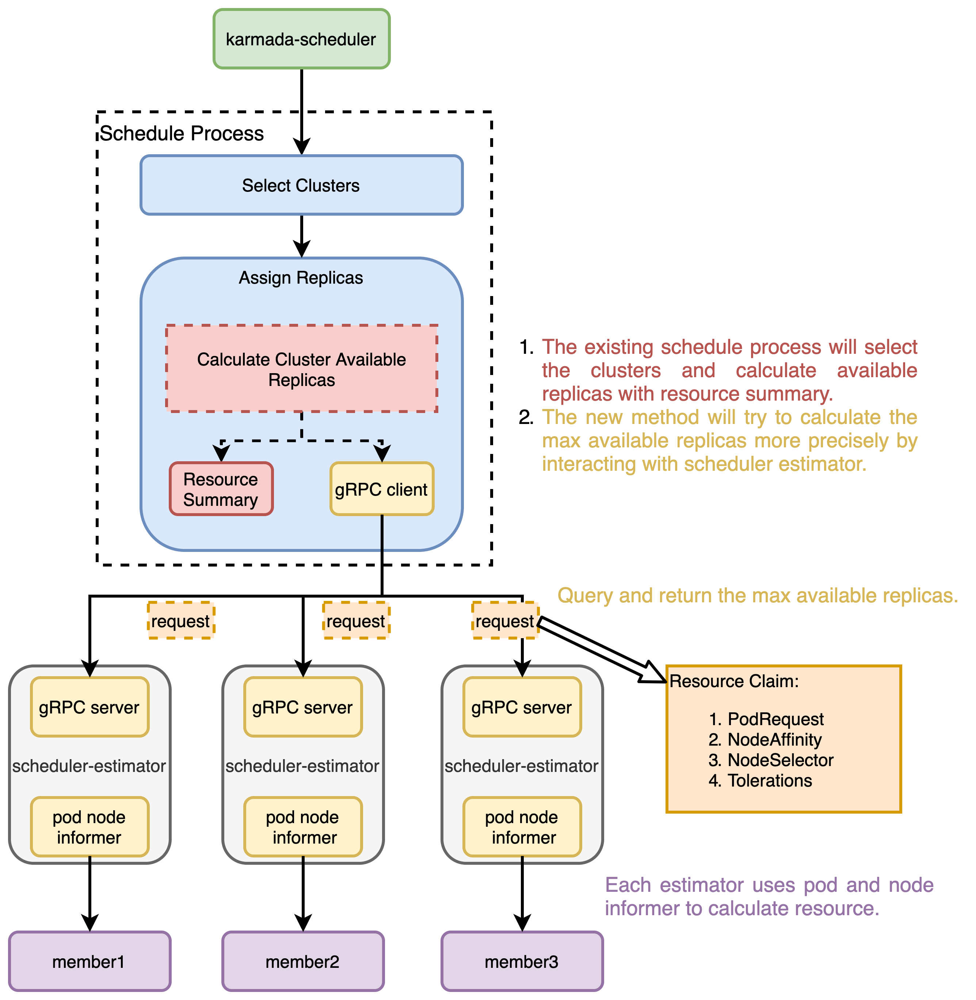

Cluster Accurate Scheduler Estimator
Summary
As workloads in multi-clusters become more heterogeneous, it is natural that they have different scheduling needs such as NodeSelector, NodeAffinity and Tolerations. Meanwhile, the scheduler could not perceive free node resource of every node in member cluster accurately.
This KEP proposes a new component, Karmada Cluster Accurate Scheduler Estimator, to enhance the accurate scheduling for Karmada Scheduler. It aims for estimating available replicas and return the result back to Karmada Scheduler for decision reference。
Motivation
There is currently no right way for Karmada Scheduler to perceive the dynamic node resource and pod request resource of the member clusters. The scheduler could only know the total resource situation of a member cluster according to the NodeSummary and ResourceSummary in Cluster.Status. If a workload specifies the replica resource claim, we should know how many available replicas a member cluster could produce in case of propagating too many replicas, which may lead to pending pods that fail to be scheduled.
The Cluster Accurate Scheduler Estimator aims to fix these problems.
Goals
- Make the available replica estimation more acurate for scheduler decision reference.
- Allow user to specify node claim such as
NodeAffinity,NodeSelectorandTolerationsfor multi-cluster scheduling.
Non-Goals
- Estimating how many pods have failed to been scheduled for rescheduling decision reference.
- Estimating available replicas groups in group and gang scheduling.
Proposal
This proposal gives a new component to estimate the maximum available replica of a workload. When assigning replicas, the Karmada Scheduler parallelly requests the corresponding Cluster Accurate Scheduler Estimators for estimation by gRPC request.
This proposal is divided into several steps, see below:
- [ ]
ResourceBindingAPI changes to addNodeAffinity,NodeSelectorandTolerations. - [ ] Definition of proto and gRPC struct file.
- [ ] Estimator client integration in Karmada Scheduler.
- [ ] Estimator server development in Karmada Cluster Accurate Scheduler Estimator.
- [ ] Deployment script of Karmada Cluster Accurate Scheduler Estimator.
- [ ] Associated docs and architecture diagram as a supplement.
User Stories
Story 1
Imagine that we have 1 workload and 2 member clusters, and the ReplicaDivisionPreference is Aggregated.
- Condition:
- Cluster A has 10 nodes and each has 8 cpu remaining.
- Cluster B has 2 nodes and each has 16 cpu remaining.
- Workload has 1 replica and requests for 12 cpu.
- Result:
- Workload will be scheduled to Cluster A because it has more cpu remaining in total. However, it won't work because there is no node that could match the 12-cpu request.
- Only Cluster B can handle the workload's request but its total resource does not have a competitiveness.
Story 2
Imagine that 1 workload has a NodeSelector of "key=value", and the ReplicaDivisionPreference is Aggregated.
- Condition:
- Cluster A has 10 nodes and each has 16 cpu remaining.
- Cluster B has 2 nodes, which have a label of "key=value" and each node has 16 cpu remaining.
- Workload has 1 replica with a NodeSelector of "key=value" and requests for 12 cpu.
- Result:
- Workload will be scheduled to Cluster A because it has more cpu remaining in total. However, it won't work because there is no node that could match the NodeSelector.
- Only Cluster B can handle the workload's request but its total resource does not have a competitiveness.
Design Details
The cluster maximum available replicas result has a significant influence with the scheduling. To solve this problem, we could change the way that we estimate the cluster available replicas. Note that it is now estimated by resource summary of a cluster. This function could be converted into a new scheduler plugin type.
Here's the architecture design diagram.

API Changes
First, the API of ResourceBinding must be changed. NodeAffinity, NodeSelector and Tolerations would be added as a representative for NodeClaim along with the existed ResourceRequest. It is noticed that ReplicaResourceRequirements and Replicas is now in ObjectReference. It would be better to move these two fields in ResourceBindingSpec.
// ResourceBindingSpec represents the expectation of ResourceBinding.
type ResourceBindingSpec struct {
// Resource represents the Kubernetes resource to be propagated.
Resource ObjectReference `json:"resource"`
// ReplicaRequirements represents the requirements required by each replica.
// +optional
ReplicaRequirements *ReplicaRequirements `json:"replicaRequirements,omitempty"`
// Replicas represents the replica number of the referencing resource.
// +optional
Replicas int32 `json:"replicas,omitempty"`
// Clusters represents target member clusters where the resource to be deployed.
// +optional
Clusters []TargetCluster `json:"clusters,omitempty"`
}
// ReplicaRequirements represents the requirements required by each replica.
type ReplicaRequirements struct {
// NodeClaim represents the node claim HardNodeAffinity, NodeSelector and Tolerations required by each replica.
// +optional
NodeClaim *NodeClaim `json:"nodeClaim,omitempty"`
// ResourceRequest represents the resources required by each replica.
// +optional
ResourceRequest corev1.ResourceList `json:"resourceRequest,omitempty"`
}
// NodeClaim represents the node claim HardNodeAffinity, NodeSelector and Tolerations required by each replica.
type NodeClaim struct {
// A node selector represents the union of the results of one or more label queries over a set of
// nodes; that is, it represents the OR of the selectors represented by the node selector terms.
// Note that only PodSpec.Affinity.NodeAffinity.RequiredDuringSchedulingIgnoredDuringExecution
// is included here because it has a hard limit on pod scheduling.
// +optional
HardNodeAffinity *corev1.NodeSelector `json:"hardNodeAffinity,omitempty"`
// NodeSelector is a selector which must be true for the pod to fit on a node.
// Selector which must match a node's labels for the pod to be scheduled on that node.
// +optional
NodeSelector map[string]string `json:"nodeSelector,omitempty"`
// If specified, the pod's tolerations.
// +optional
Tolerations []corev1.Toleration `json:"tolerations,omitempty"`
}
Karmada Scheduler
First, the existing plugins in Karmada Scheduler such as ClusterAffinity, APIInstalled and TaintToleration will select the suitable clusters.
Based on this prefilter result, when assigning replicas, the Karmada Scheduler could try to calculate cluster max available replicas by starting gRPC requests concurrently to the Cluster Accurate Scheduler Estimator. At last, the Cluster Accurate Scheduler Estimator will soon return how many available replicas that the cluster could produce. Then the Karmada Scheduler assgin replicas into different clusters in terms of the estimation result.
We could implement this by modifying function calClusterAvailableReplicas to a interface. The previous estimation method, based on ResourceSummary in Cluster.Status, is able to be a default normal estimation approach. Now we could just add a switch to determine whether Cluster Accurate Scheduler Estimator is applied, while the estimator via ResourceSummary could be a default one that does not support disabled. In the future, after the scheduler profile is added, a user could customize the config by using a profile.
Furthermore, replica estimation can be considered as a new scheduler plugin.
Karmada Cluster Accurate Scheduler Estimator
Cluster Accurate Scheduler Estimator is a independent component that works as a gRPC server. Before its server starts, a pod and node informer associated with a member cluster will be created as a cache. Once the cache has been synced, the gRPC server would start and serve the incoming scheduler request as a replica estimator. Each Cluster Accurate Scheduler Estimator serves for one cluster, as same as karmada-agent.
There are five steps for a scheduler estimation:
- Verify whether the request meets the requirements.
- Find all nodes that matches the node claim.
- List nodes by label selector.
- Filter nodes by node affinity.
- Filter schedulable nodes by taints and tolerations.
- Estimate max available replicas in every filter node.
- Get pods that assigned to the node.
- Calculate node idle resource.
- Calculate how many replicas that the node can be divided into, marked as
r1. - Calculate the maximum remaining pods that the node allows, marked as
r2. - Return the max available replicas -->
min(r1, r2). - Return the sum of all node max available replicas.
Test Plan
- Unit Test covering:
- Core changes in Karmada Scheduler that consists of gRPC connection establishment, replica estimation request sending.
- Core changes in Karmada Cluster Accurate Scheduler Estimator that consists of node filtering and node idle resource calculation.
- E2E Test covering:
- Deploy Karmada Cluster Accurate Scheduler Estimator.
- Specify different node claim in a workload and test the scheduler result.